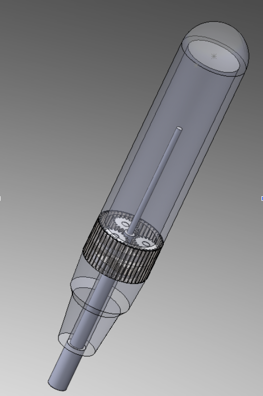
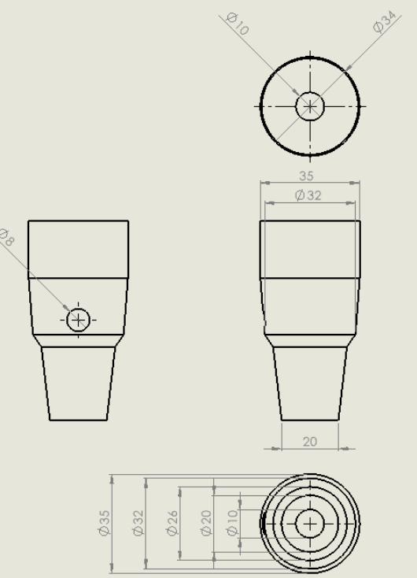

Mechanical
Dissections

16:1 Reduction Gearbox Assembly
The Gearbox
This parallel gearbox features co-linear input and output shafts, and a reduction ratio of 16:1 is achieved through a four-gear train consisting of two large 40-toothed gears and two small 10-toothed gears. Furthermore, all parts were designed and modeled in SolidWorks CAD and were manufactured using 3D printing.
Key Outcome
Achieved smooth power delivery with negligible vibration during high-RPM testing cycles.
Watch Gearbox Short
YouTube Shorts Placeholder
Gearbox Testing (2x Speed)
Screwdriver Modification
Reverse-engineered an electric screwdriver featuring a planetary gearbox. To allow for the user to manually lock the shaft position, I added a push-lock mechanism that locks the shaft when the user pushes a button.

Original Screwdriver CAD

Modified Housing Unit with Push-Lock Mechanism